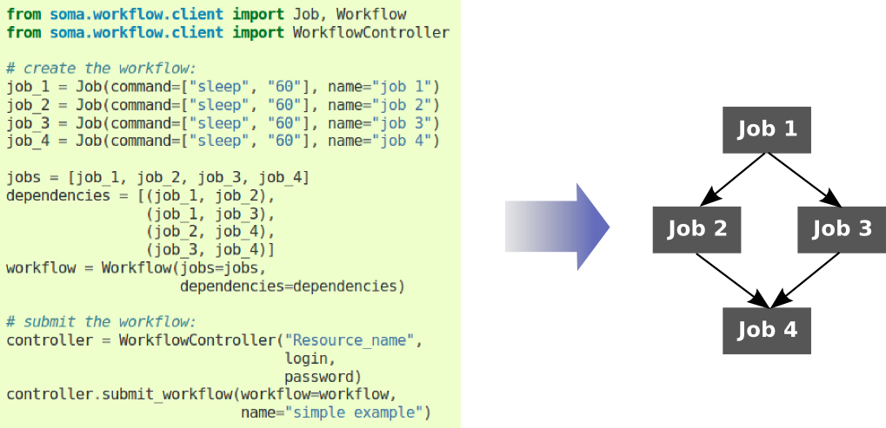
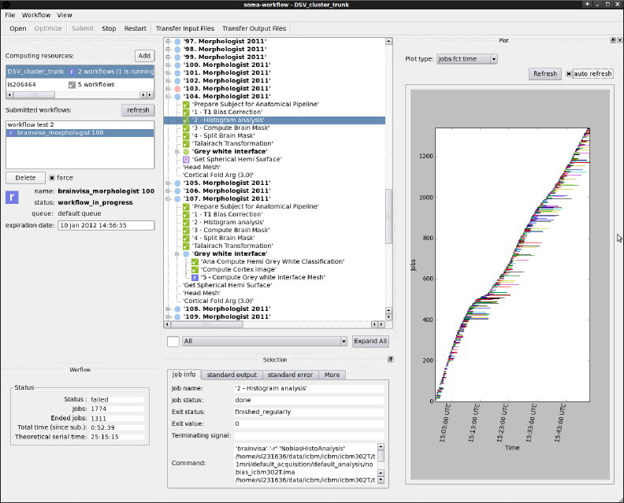

Main Features¶
- Unified interface to multiple computing resources:
- Submission of jobs or workflows with an unique interface to various parallel resources: multiple core machines or clusters which can be managed by various systems (such as Grid Engine, Condor, Torque/PBS, LSF..)
- Workflow management:
Soma-workflow provides the possibility to submit a set of tasks (called jobs) with execution dependencies without dealing with individual task submission.

Workflow example
- Python API and Graphical User Interface:
The Python API was designed to be easily used by non expert user, but also complete to meet external software needs: submission, control and monitoring of jobs and workflows. The GUI provides an easy and quick way of monitoring workflows on various computing resources. The workflows can also be submitted and controlled using the GUI.
Overview of Soma-workflow python API
Overview of Soma-workflow graphical interface
- Quick start on multiple core machines:
- Soma-workflow is directly operational on any multiple core machine.
- Transparent remote access to computing resources:
- When the computing resource is remote, Soma-workflow can be used as a client-server application. The communication with a remote computing resource is done transparently for the user through a ssh port forwarding tunnel. The client/server architecture enables the user to close the client application at any time. The workflows and jobs execution are not stopped. The user can open a client at any time to check the status of his work.
- File transfer and file path mapping tools:
- If the user’s machine and the remote computing resource do not have a shared file system, Soma-workflow provides tools to handle file transfers and/or path name matchings.
{kind=link}
{kind=link}